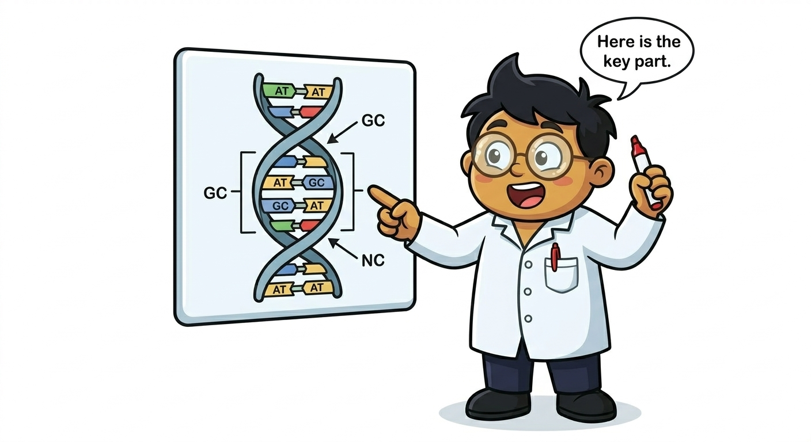

Full-length transcript sequencing with Oxford Nanopore (ONT) and PacBio HiFi — covering basecalling, alignment with Minimap2, transcript assembly with IsoQuant/FLAMES/StringTie2, and differential isoform analysis with DEXSeq.
Short-read RNA-Seq (Illumina) measures gene expression well but struggles to resolve full-length transcript isoforms — a single gene can produce dozens of distinct transcripts with different exon compositions, affecting protein function. Long-read sequencing platforms (Oxford Nanopore and PacBio) can sequence entire mRNA molecules (1–15+ kb) in a single read, enabling:

| Feature | Oxford Nanopore (ONT) | PacBio HiFi (CCS) |
|---|---|---|
| Read length | Avg 5–20 kb (up to 4 Mb) | Avg 10–20 kb |
| Accuracy | Q20+ (R10 chemistry) | Q30+ (HiFi) |
| Throughput | Very high (PromethION: ~290 Gb/run) | High (Revio: ~90 Gb/run) |
| Cost per Gb | Lower | Higher |
| Direct RNA | Yes (no RT step) | No |
| Best for | Discovery, high throughput, direct RNA | High accuracy, diploid isoforms |
| Recommended aligner | Minimap2 (-ax splice) | Minimap2 (-ax splice:hq) |
conda create -n lrrnaseq python=3.10 -y
conda activate lrrnaseq
# Core tools
conda install -c bioconda minimap2 samtools nanostat isoquant flames stringtie -y
# Python packages
pip install pyranges pandas matplotlib seaborn
# R packages (run in R)
# BiocManager::install(c("DEXSeq", "tximeta", "fishpond", "bambu"))Raw ONT data (FAST5/POD5) must be basecalled to produce FASTQ. Use Dorado (the current ONT basecaller, replacing Guppy).
# Install Dorado (ONT's current basecaller)
# Download from: https://github.com/nanoporetech/dorado/releases
# Download model (super-accurate for RNA)
dorado download --model rna004_130bps_sup@v5.0.0
# Basecall POD5 files
dorado basecaller \
rna004_130bps_sup@v5.0.0 \
pod5_pass/ \
--emit-fastq \
--reference genome.fa \ # optional: for alignment during basecalling
> reads.fastq
# For cDNA (not direct RNA):
dorado basecaller \
dna_r10.4.1_e8.2_400bps_sup@v4.3.0 \
pod5_pass/ \
--emit-fastq > cdna_reads.fastq
echo "Basecalling done"
wc -l reads.fastq # should be 4x number of reads# QC summary statistics
NanoStat --fastq reads.fastq --outdir nanostat_qc/ -t 8
# NanoPlot for visualisation
pip install NanoPlot
NanoPlot --fastq reads.fastq \
--outdir nanoplot_qc/ \
--plots dot --N50 \
-t 8
# Key metrics to check:
# - Mean read length (aim: >1 kb for mRNA)
# - Mean quality score (aim: Q15+ for ONT R10, Q30+ for PacBio HiFi)
# - N50 read length (median of longest reads covering 50% of data)
# - Total bases sequenced# Parse NanoStat output in Python
import pandas as pd
with open("nanostat_qc/NanoStats.txt") as f:
lines = f.readlines()
stats = {}
for line in lines:
parts = line.strip().split(":")
if len(parts) == 2:
stats[parts[0].strip()] = parts[1].strip()
print(f"Total reads: {stats.get('Number of reads', 'N/A')}")
print(f"Mean length: {stats.get('Mean read length', 'N/A')} bp")
print(f"Mean quality: {stats.get('Mean read quality', 'N/A')}")
print(f"N50 length: {stats.get('Read length N50', 'N/A')} bp")
print(f"Total bases: {stats.get('Total bases', 'N/A')}")-ax splice for cDNA/mRNA (not -ax map-ont which is for genomic DNA). For PacBio HiFi, use -ax splice:hq. Missing this causes massive misalignment rates.# Index genome
minimap2 -d genome.mmi genome.fa
# Align ONT cDNA reads (splice-aware)
minimap2 \
-ax splice \
-uf \ # forward-strand only for stranded libraries
--secondary=no \ # suppress secondary alignments
-C 5 \ # cost for non-canonical splicing
-t 16 \
genome.mmi \
reads.fastq \
| samtools sort -@ 8 -o aligned.bam
samtools index aligned.bam
# Align PacBio HiFi (higher accuracy mode)
minimap2 \
-ax splice:hq \
--secondary=no \
-t 16 \
genome.mmi \
hifi_reads.fastq \
| samtools sort -@ 8 -o aligned_hifi.bam
# Check alignment statistics
samtools flagstat aligned.bamThree tools benchmarked by LRGASP — choose based on your use case:
conda install -c bioconda isoquant -y
isoquant.py \
--reference genome.fa \
--genedb annotation.gtf \
--bam aligned.bam \
--data_type nanopore \ # or 'pacbio_ccs' for HiFi
--output isoquant_output/ \
--threads 16 \
--transcript_quantification unique_only \
--gene_quantification unique_only
# Key outputs:
# isoquant_output/sample/sample.transcript_models.gtf — novel transcripts
# isoquant_output/sample/sample.transcript_counts.tsv — counts per transcript
# isoquant_output/sample/sample.gene_counts.tsv — counts per gene# FLAMES is particularly powerful for scRNA-Seq + long reads
# Install via conda or R/Bioconductor
pip install flames
python - <<'EOF'
from flames import bulk_long_pipeline
bulk_long_pipeline(
annotation="annotation.gtf",
fastq_dir="fastq/",
out_dir="flames_output/",
genome_fa="genome.fa",
minimap2="minimap2",
k=5, # minimum splice count
strand_specific=1
)
EOFstringtie \
aligned.bam \
-G annotation.gtf \
-L \ # long-read mode
-o stringtie_output.gtf \
-e \ # estimate expression of known transcripts only
-B \ # output Ballgown-compatible tables
-p 16import pandas as pd
import matplotlib.pyplot as plt
import matplotlib.patches as mpatches
# Load IsoQuant transcript counts
counts = pd.read_csv(
"isoquant_output/sample/sample.transcript_counts.tsv",
sep="\t", index_col=0
)
# Load novel vs known transcript classification
models = pd.read_csv(
"isoquant_output/sample/sample.transcript_models.tsv",
sep="\t"
)
# Count novel transcripts by category
category_counts = models["transcript_type"].value_counts()
print("Transcript categories:")
print(category_counts.to_string())
# Plot transcript categories
fig, ax = plt.subplots(figsize=(8, 5))
colours = {
"known": "#4CAF50",
"novel_not_in_catalog": "#F44336",
"novel_in_catalog": "#FF9800",
"antisense": "#9C27B0",
"intergenic": "#607D8B"
}
bars = ax.barh(
category_counts.index,
category_counts.values,
color=[colours.get(c, "#90A4AE") for c in category_counts.index]
)
ax.set_xlabel("Number of transcripts", fontsize=12)
ax.set_title("Transcript categories from IsoQuant", fontsize=14, fontweight="bold")
ax.bar_label(bars, padding=3, fontsize=9)
plt.tight_layout()
plt.savefig("transcript_categories.pdf", dpi=300, bbox_inches="tight")
plt.show()library(DEXSeq)
library(tximeta)
library(fishpond)
# Load transcript-level counts from IsoQuant (or Salmon for short reads)
# Using fishpond/swish for DTU (better than DEXSeq for long reads)
se <- tximeta(
coldata = data.frame(
names = c("sample1","sample2","sample3","sample4"),
files = c("s1/quant.sf","s2/quant.sf","s3/quant.sf","s4/quant.sf"),
condition = c("ctrl","ctrl","treat","treat")
),
type = "salmon",
txOut = TRUE # transcript-level, not gene-level
)
# Aggregate to gene level for DTU testing
gse <- summarizeToGene(se)
# Scale inferential replicates
se <- scaleInfReps(se)
# Test for DTU using Swish
se <- labelKeep(se, minCount=10, minN=3)
se <- swish(se, x="condition", level="isoform")
# Results
res <- data.frame(mcols(se)) |>
dplyr::filter(!is.na(qvalue)) |>
dplyr::arrange(qvalue)
cat("Significant DTU transcripts (q < 0.05):", sum(res$qvalue < 0.05, na.rm=TRUE), "\n")
head(res[, c("tx_id","gene_id","log2FC","pvalue","qvalue")], 20)Key takeaways from the Nature Methods 2024 LRGASP consortium paper (Pardo-Palacios et al., 2024):
| Tool | Novel isoform sensitivity | Precision | Best for |
|---|---|---|---|
| IsoQuant | High | High | Novel isoform discovery, bulk & single-cell |
| FLAMES | High | Medium–High | Single-cell long-read RNA-Seq |
| StringTie2 | Medium | High | Well-annotated genomes, fast pipelines |
| Bambu | Medium–High | Medium | R-based workflows, multi-sample |
| FLAIR | Medium | Medium | Direct RNA, modification-aware |
-ax splice / -ax splice:hqQuestions about long-read RNA-Seq? Ask in the community!
Join Discord — #splicing-and-isoforms